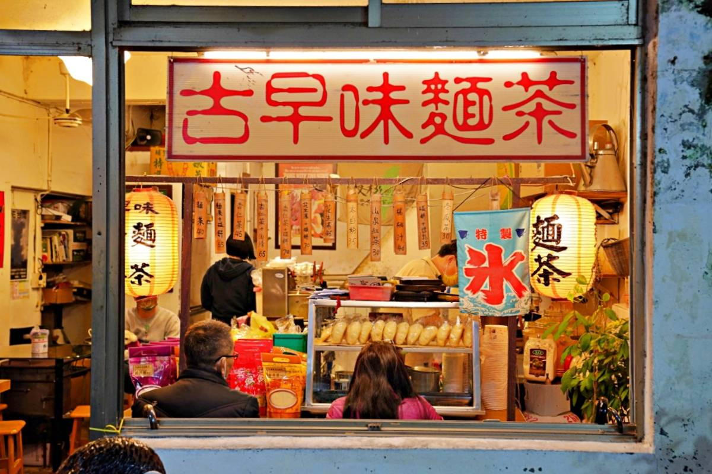
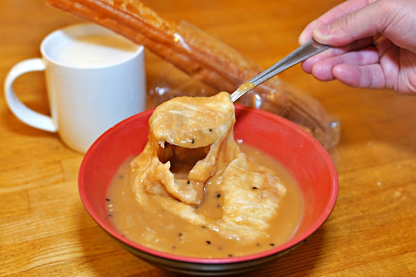

平溪古早味麵茶
google評價：4.1★
店家資訊
地址：新北市平溪區平溪街35號
營業時間：早上10:30到晚上8:00
店家電話：0958-521-525

推薦菜單
傳統麵茶30元 油條+煉乳20元 碰餅+煉乳30元
麵茶+碰餅50元 麵茶+油條45元 花生湯35元
杏仁茶30元 杏仁茶+碰餅55元 杏仁餅+油條45元
雞絲麵25元 雞絲麵+蛋30元 太白粉30元
顧客評論
是非常傳統的店家，麵茶是店家自製的，可以加油條也可以加碰餅，油條很酥脆，麵茶口感不會很稠，味道非常濃郁，而且也沒有很甜，喝起來還帶點芝麻的香味，將油條泡軟一點在入口，會更好吃。如果加碰餅的話店家會直接把碰餅加到麵茶裡麵，口味吃起來很療癒。另外雞絲麵也很推薦，放了九層塔多了一點香氣。